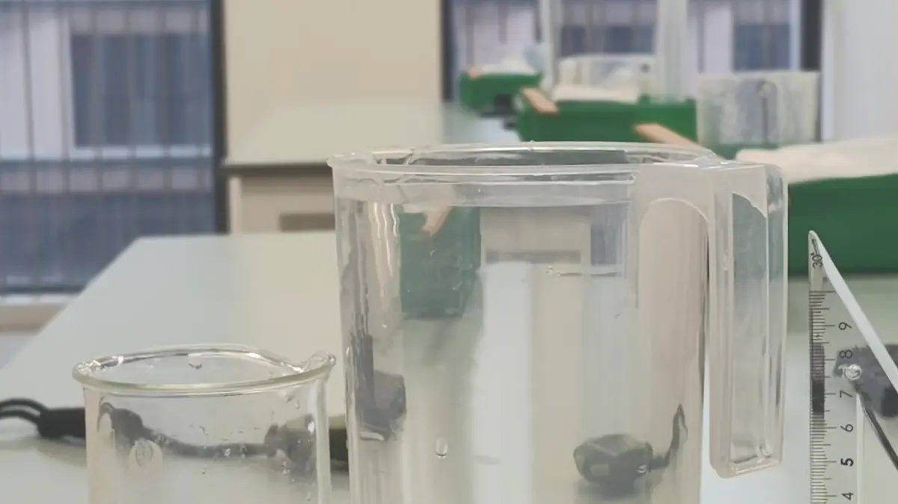

The question
An M-shaped rigid tube can begin siphoning when it is partially immersed in water. I investigated how its highest bend, segment lengths, internal radius, and outlet angle affect the start-up process.
03 / CYPT 2026 / SELF-STARTING SIPHON
A question set in motion.
How can a tube start siphoning without suction? An investigation into the relationship between geometry, pressure, and moving water.

THE STORY
An M-shaped rigid tube can begin siphoning when it is partially immersed in water. I investigated how its highest bend, segment lengths, internal radius, and outlet angle affect the start-up process.
The model divides the tube into straight sections and bends, considering pressure, gravity, capillarity, and resistance. Video tracking provided estimates of outlet velocity for comparison with different tube configurations.
Within the tested conditions, increasing the height above the water surface reduced outlet speed. Increasing the internal radius from 2.0 to 3.0 mm raised measured speed from 13.9 to 17.6 cm/s, while larger tubes encountered trapped air. The investigation also considered the limits of video measurement and the simplified flow model.